Fiche 02 -- Prise en main d'un Pare-feu SNS
Documentation officielle
Connexion au pare-feu SNS
Pour accéder à l'interface d'administration du pare-feu SNS, il est indispensable de connecter votre machine cliente (physique ou virtuelle) sur une interface interne (IN ou DMZ1 ou 2 sur les boîtiers SN310 et les machines virtuelles, IN sur les boitiers SN210) sous peine de devoir redémarrer le pare-feu qui aura détecté une tentative d'usurpation d'adresse IP sur le bridge et bloquera tout le trafic généré par la machine connectée sur l'interface OUT.
L'interface IN doit être dans le même réseau que la machine à partir de laquelle il va être procédé à une première configuration.
L'accès à l'interface graphique d'administration du pare-feu SNS se fait par https://@IP/admin (https://10.0.0.254/admin sur un boîtier) à partir d'un navigateur web :
 |
L'écran ci-contre apparaît pour vous connecter une fois le pare-feu SNS démarré. |
|---|---|
| - Pour modifier les options de langue de l'interface web d'administration, dépliez Options puis choisissez la langue. | La fenêtre est actualisée, vous pouvez vous connecter à nouveau. |
| - Saisir l'identifiant admin, le mot de passe admin ou celui que vous avez configuré si vous avez effectué la réinitialisation de la machine virtuelle (par ex. Sio2022* ou autre). | Remarque : pour s'authentifier, l'utilisateur peut également sélectionner un certificat SSL dans le magasin de son navigateur (à configurer au préalable dans les préférences du pare-feu SNS). Nous étudierons cette possibilité dans la partie avancée sur la mise en place d'une PKI avec Stormshield. |
Sécurité
Pour des raisons évidentes de sécurité, il conviendra de modifier ce mot de passe lorsque le pare-feu SNS sera utilisé en contexte réel d'entreprise.
La page d'accueil de votre pare-feu SNS s'ouvre sur un Tableau de bord qui permet de visualiser un certain nombre d'informations sur votre équipement et est personnalisable.
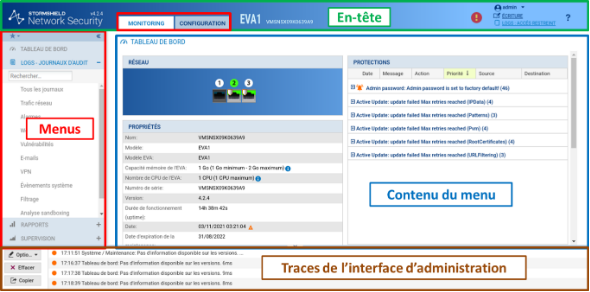
Première configuration
Nous verrons ci-après un certain nombre d'éléments de configuration générale utiles pour la bonne mise en œuvre de votre pare-feu SNS (pour des configurations plus avancées et autres détails, cf fichier v4CSNA_v4_Livre_formation_Stomshield.pdf).
Vigilence
Afin de ne jamais être déconnecté en cas d'inactivité sur l'interface d'administration pendant ces exercices pratiques, il conviendra de modifier vos préférences, en usage réel vous utiliserez un délai de 5 minutes pour éviter de laisser votre session ouverte sur le pare-feu SNS.
- Cliquer sur la flèche à droite de l'icône représentant l'utilisateur connecté en haut à droite.
- Cliquer sur l'icône Préférences
- Dans la zone Paramètres de connexion, sélectionner dans la liste « Déconnexion en cas d'inactivité : » la valeur Toujours rester connecté.
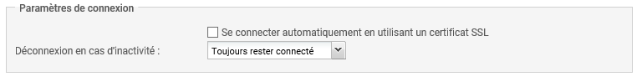
Nous étudierons notamment les éléments du menu Configuration / Système qui correspond à la configuration générale : licence, mise à jour, mot de passe, etc.
Configuration générale
- Sélectionner dans le menu à gauche Configuration / Système puis Configuration. Le volet Configuration générale est affiché.
- Commencer par donner un nom à votre boîtier et changer la langue de la console.

Il est préférable de mettre les logs en anglais : Langue du pare-feu (traces) afin de pouvoir rechercher plus facilement des références à d'éventuels problèmes dans les ressources documentaires Stormshield et sur les forums avec les bons mots-clés.
La zone Politique de mots de passe permet de définir la longueur du mot de passe (8 par défaut) et la zone Types de caractères obligatoires permet de gérer la complexité du mot de passe (Aucun, Alphanumériques, Alphabétiques et spéciaux), la zone Entropie minimale correspond à la robustesse du mot de passe. En utilisation en entreprise, il est recommandé de changer le mot de passe de l'administrateur et d'augmenter à 12 le nombre de caractères.
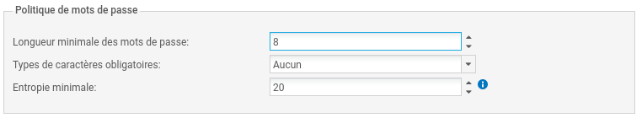
La zone « Paramètres de date et d'heure » permet de modifier le fuseau horaire dans la zone Fuseau horaire, sélectionnez Europe/Paris.
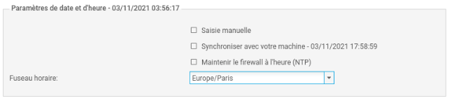
NB
La modification du fuseau horaire implique un redémarrage immédiat, pour ne pas avoir de décalage dans les journaux ou avec une PKI*.
- Cliquer le bouton Appliquer pour sauvegarder la configuration et Sauvegarder
Un avertissement puis une icône apparaissent vous invitant à redémarrer le pare-feu. Il est bien sûr possible de le faire une fois les autres configurations réalisées.
-
Cliquer sur l'icône et sélectionner Redémarrer maintenant.
-
Après le redémarrage (au bout d'environ 3 minutes), revenir au menu Configuration / Système puis Configuration et dans la zone Paramètres de date et d'heure cliquer sur Maintenir le pare-feu à l'heure (NTP) pour que les mises à jour d'heure d'été/heure d'hiver soient également effectives.
Administration du pare-feu
- Dans le volet Système / Configuration, ouvrir l'onglet Administration du pare-feu pour visualiser les options de configuration de l'administration du pare-feu.
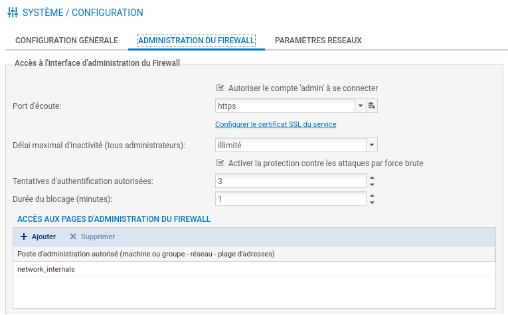
Plusieurs options sont configurables mais ne sont pas détaillées ici (cf. fichier CSNA_v4_Livre_formation_Stomshield.pdf).
Paramètres réseaux
- Dans le volet Système / Configuration, ouvrir l'onglet Paramètres réseaux pour visualiser les options de configuration réseau du pare-feu.
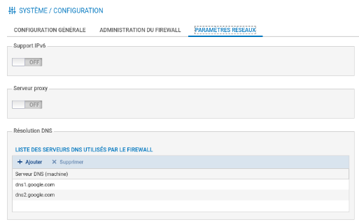
Les pare-feu Stormshield Network supportent le protocole IPv6 et plusieurs fonctionnalités (interface, routage, filtrage, VPN et administration) sont compatibles IPv6. Cependant, ce support est optionnel et son activation s'effectue via le bouton Activer le support du protocole IPv6 sur ce pare-feu (ce qui est inutile ici).
NOTE
Cette action étant irréversible, la sauvegarde de la configuration du pare-feu vous sera proposée automatiquement lorsque vous cliquerez sur ce bouton. Le retour à un support IPv4 exclusif (sans IPv6) n'est possible qu'après une remise à la configuration usine (reset) du pare-feu.
Dans le cas où le pare-feu transite par un proxy pour accéder à Internet, les paramètres se renseignent depuis ce menu.
Un ou plusieurs serveurs DNS peuvent être ajoutés. Le pare-feu contacte ces serveurs pour toute résolution qu'il émet ou doit relayer. Ces résolutions de noms sont nécessaires pour des fonctionnalités telles que Active Update qui interroge les serveurs de mise à jour pour télécharger les bases de données (signatures contextuelles, antivirus, Vulnerability Manager, etc.).
Pour ajouter un DNS :
- Cliquer sur Ajouter puis saisir (ou choisir ou créer) un « objet » (cf fiche 4) et cliquer sur le bouton Appliquer pour sauvegarder la configuration et Sauvegarder.
NOTE
Ci-dessous, les trois DNS par défaut (la machine elle-même, et deux DNS de Google !). Si on passe la souris sur l'objet, on voit les valeurs des propriétés de l'objet.
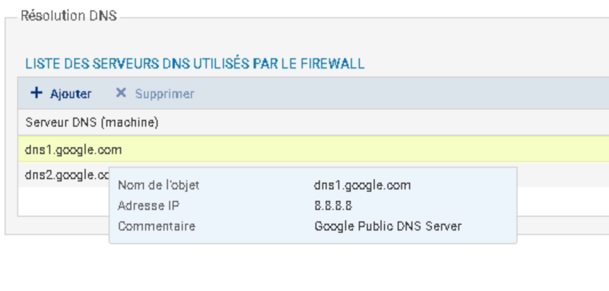
Autres configurations

Modification du mot de passe de l'administrateur
La modification du mot de passe admin (recommandée) se fait dans le menu Configuration/Système/Administrateurs puis onglet Compte ADMIN. Le mot de passe doit par défaut, comporter au moins 8 caractères et doit respecter la politique de mot de passe définie dans le menu Configuration. La robustesse du mot de passe choisit s'affiche alors. Elle indique son niveau de sécurité : Très faible, faible, moyen, bon, excellent. Il est fortement conseillé d'utiliser les majuscules et les caractères spéciaux pour augmenter le niveau de sécurité.
Activation de la licence
Le menu Configuration / Système / Licence affiche les détails de la licence et permet le cas échéant de l'installer :
- pour un boîtier : à récupérer par l'administrateur sur le site mystormshield.eu avec les informations figurant sous le boîtier.
- Pour une VM : il est nécessaire au préalable de procéder à l'activation du kit à télécharger sur le site de Stormshield (voir également page suivante) : https://documentation.stormshield.eu/SNS/v4/fr/Content/PDF/InstallationGuides/sns-fr_EVA_Guide_Installation.pdf
Attention
À noter que si vous n'activez pas la licence au bout d'un certain temps les fonctionnalités se réduisent et surtout vous ne pourrez pas stocker les logs sur les boîtiers physiques.
Sur une VM, les fonctionnalités sans activation sont limitées :
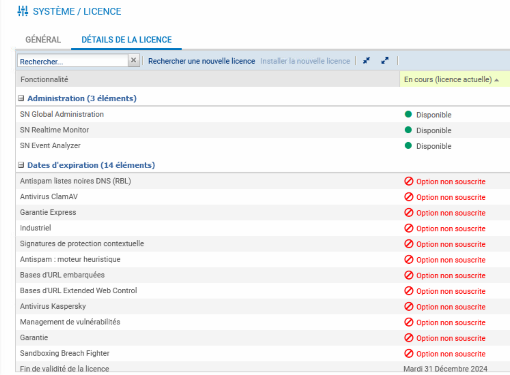
-
Pour activer la licence sur une VM :
-
Se connecter sur https://mystormshield.eu.
- Cliquer sur « Product management » (menu gauche) et télécharger le kit d'activation.
- Revenir éventuellement sur la page pour télécharger le fichier licence, mais cette dernière pourra être activée automatiquement une fois le kit d'activation intégré via l'interface du pare-feu.
Attention
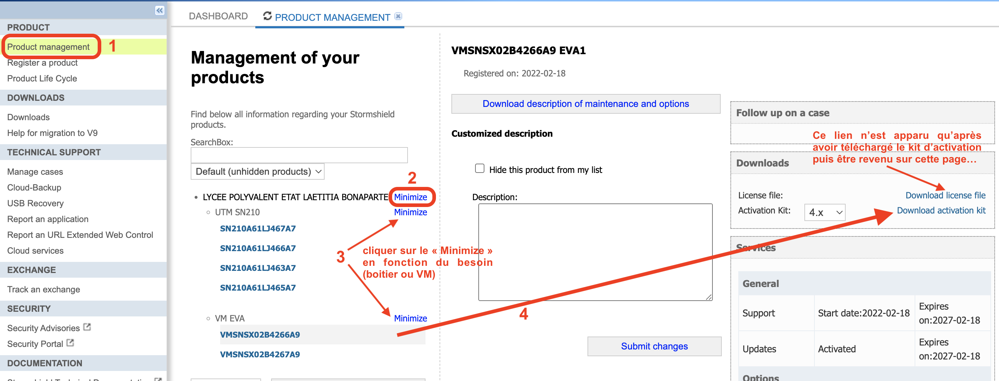
Il est nécessaire d'importer d'abord le fichier de mise à jour téléchargé via le kit d'activation.
- Activer le menu Configuration / Système / Maintenance.
- L'onglet sur « Mise à jour du système » est activé. Cliquer le bouton « ... » et sélectionner la mise à jour récupérée dans le kit d'activation à partir d'un poste client ou d'une clé USB.
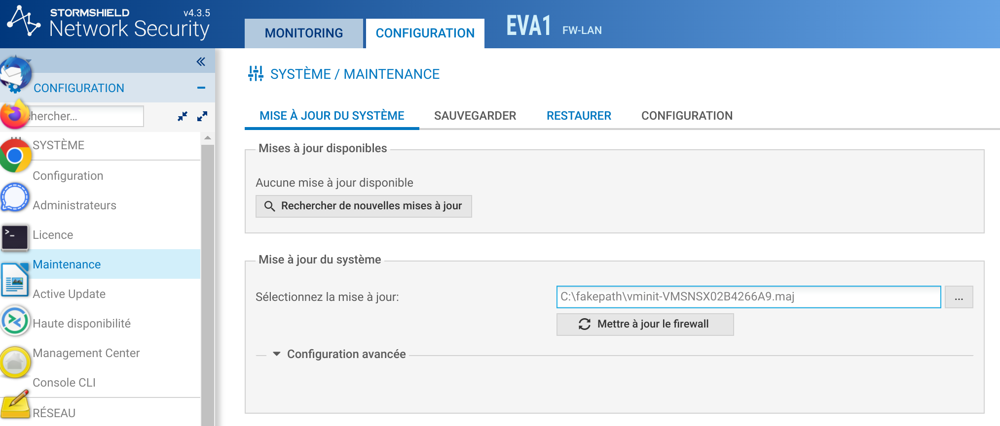
Depuis la zone Configuration avancée, vous pouvez choisir de Télécharger le firmware et l'activer ce qui appliquera la mise à jour ou bien de la télécharger uniquement, son activation pourra se faire ultérieurement avec l'option Activer le firmware précédemment téléchargé.
- Dans la zone Configuration avancée choisir Télécharger le firmware et l'activer.
-
Cliquer sur le bouton 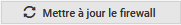 L'opération prendra plusieurs minutes surtout ne débranchez pas le pare-feu pendant la mise à jour. Le pare-feu sera ensuite redémarré.
-
Une fois cette opération réalisée, activer le menu Configuration / Système / Licence puis cliquer sur « Installer la nouvelle licence ». Cette dernière s'active alors automatiquement.
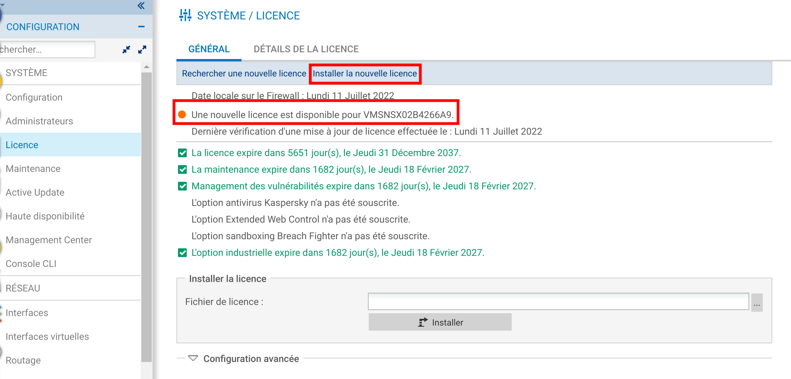
Mise à jour du système
Le menu Configuration / Système / Maintenance / onglet Mise à jour du système permet de mettre à jour le système le cas échéant. Afin d'appliquer un fichier de mise à jour du firmware, vous devrez le télécharger sur le pare-feu (soit directement via le lien 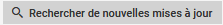 une fois que la configuration du réseau et de la passerelle par défaut est réalisée et que le pare-feu a accès à Internet, soit en allant le télécharger sur le site https://mystormshield.eu).
Attention
Pour que la mise à jour puisse se faire, la date et l'heure doivent être synchronisé via le protocole NTP.roduct management » (menu gauche) :
Attention
Il est parfois nécessaire de réaliser les mises à jour intermédiaires à récupérer sur le site de Stormshield (cela a été le cas sur le SNS510 mais non sur les VM) même en dehors de celles qui sont proposées.
- Cliquer Configuration / Système / Maintenance / onglet Mise à jour du système.
- Cliquer le bouton « ... » et sélectionner le fichier de mise à jour présent sur le poste client ou une clé USB.
- Déplier la zone Configuration avancée.
- Dans la « configuration avancée », vous pouvez choisir de Télécharger le firmware et l'activer ce qui appliquera la mise à jour ou bien de la télécharger uniquement, son activation pourra se faire ultérieurement avec l'option Activer le firmware précédemment téléchargé.
- Dans la zone Configuration avancée choisir Télécharger le firmware et l'activer.
- Cliquer sur le bouton
L'opération prendra plusieurs minutes surtout ne débranchez pas le pare-feu pendant la mise à jour. Le pare-feu sera ensuite redémarré.
Attention
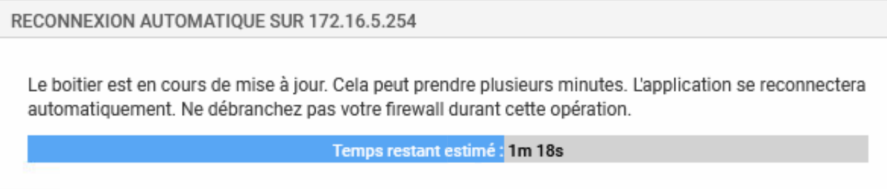
Recharger la page si cette fenêtre boucle indéfiniment.
Le menu Configuration / Système / Maintenance / onglet Configuration permet uniquement sur les boîtiers physiques de déterminer la partition active et ainsi de garder deux versions du système disponibles avec une partition de sauvegarde qui permet de revenir en arrière sur le boitier (firmware n-1, config n-1).
NB : Pour revenir à une configuration ou version n-2 ou supérieure il faut utiliser USB Recovery accessible seulement sur mystormshield.eu avec un compte client.
Le menu Configuration / Système / Active update permet de contrôler la mise à jour automatique des modules de Bases d'URLs embarquées, IPS : signatures de protection contextuelles, Géolocalisation / Réputation IP publiques, signatures antispam, antivirus et autres listes noires préconfigurées par Stormshield. Il est conseillé d'activer uniquement celles qui vous sont utiles.
Sauvegarde et restauration de la configuration
La sauvegarde de la configuration se fait dans le menu Configuration / Système / Maintenance / onglet Sauvegarder.
- Au besoin, modifier le nom du fichier et cliquez sur le bouton pour le télécharger. La sauvegarde automatique du fichier de configuration peut être mise en place et effectuée sur le Cloud Stormshield.
Info
le fichier de configuration est un fichier texte chiffré (extension « na »).
La restauration d'une configuration s'effectue dans le menu Configuration / Système / Maintenance / onglet Restaurer.
- Sélectionner le fichier à restaurer en cliquant sur le bouton ...